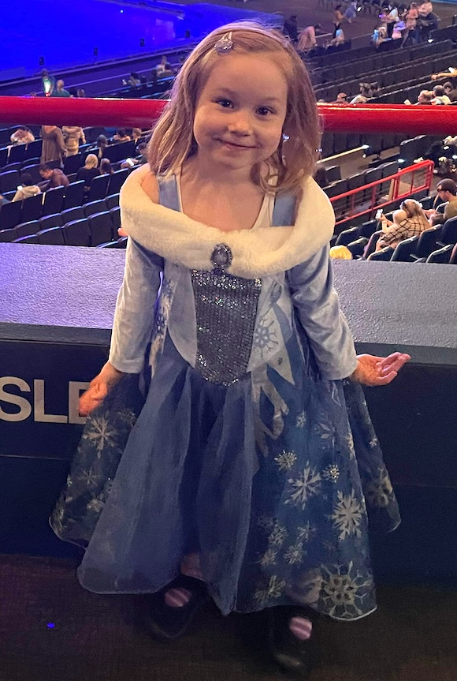

The Fargo Chronicle
Twenty-fourth Edition
December 2023
Free
Ella

EWhile still working for the Australian Girls Choir on a casual basis, Ella now has a full time job with a media sales company, QMS.
She and Ruby live in nearby Red Hill, and are both very busy at the gym. Ella is now regularly leading classes and has finished a Certificate 3 in Fitness which qualifies her to teach a greater variety of class types.
Julie retires

After recovering from a New Year's Day bout of Covid, Julie and a few friends went travelled to Tasmania to support a school friend, Jacqui, who had been diagnosed with cancer and was receiving treatment.

In June, her friend Robyn's younger daughter Tilly married in Townsville.

Also in June, Julie and friend Sasha completed a challenging 50 kilometre bike ride raising well needed funds to MS research.
That kicked off a season of fundraising activities with Julie and siter-in-law Gillian helping another SIL, Cathy with an initiative to raise money for social housing by hosting a 'Christmas in July' fun night of trivia, under the banner of 'Locals Acting Up'.
Julie retires
This was the year that the milestone of retirement was acheived. Rest didn't last long for Julie is now a supply teacher registered with the Hospital School based at the Queensland Children's Hospital and has been getting offers of two or three days per week. This will start back up in the New Year.
Ski holiday


Blah blah ACL

We stopped in Canberra on our way home to catch up with Paul's youngest brother Peter and his family.
We caught up with Peter and his daughter Gina for a meal. The following day Julie, Kate and Luna visited the festival of Floriad.
Gympie short film festival
Paul in Adelaide

Gig in April at the Triffid.
Gluten intolerance
Surfin' safari
Men's shed
Italian lessons
Riding and racing
Cycle touring
Hello Kitty

Kate, Ben and Luna started the year in Japan
Luna was lucky to see Disney on Ice at Entertainment Centre.

Kate, Ben and Luna started the year in Japan

New job or Béa
Two songs have already been released from the 2024 album from Maxwell Farrington and LeSuperHomard. Much of thebacking orchestra was recorded in the Apple Studios in Abbey Road. The full album will relased in February.
In live shows, Maxwell and LeSuperHomard supported Paul Weller (The Jam, The Style Council) on his European tour with many sell-out shows in some beautiful, historic venues.
A new album is also anticipated for the band Dewaere.
Making some noise

Béa

Ida attends school a short walk nearby and turned five in December.
Tabitha

Tabitha and Julie undertook some art classes together, learning fundamentals and techniques.
Tabitha has been staying with us intermittently as she prepares to move to Europe next year for adventure and romance.
Mother's Day

Mun continues to live independently in Currumbin. Both Julie and Jason are regular visitors and Mun still likes a flutter at the local RSL club.